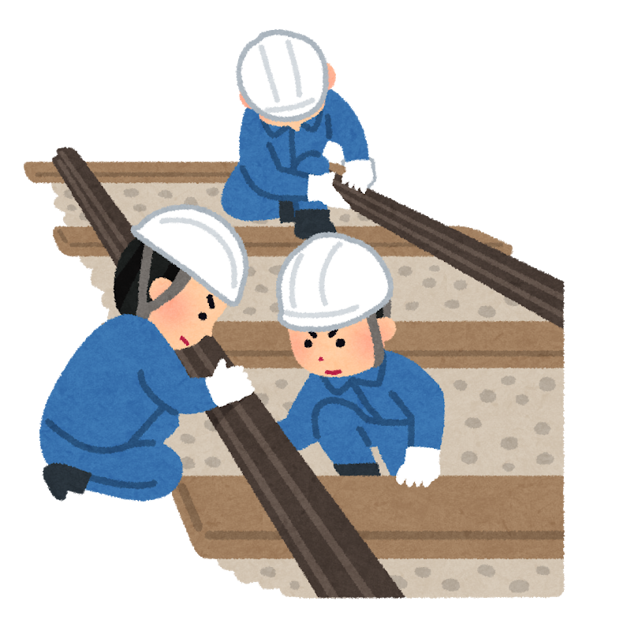

台風15号による輸送混乱などに関する申し入れ
「台風15号による輸送混乱などに関する申し入れ」を行う
東京地本は2019年9月26日、申第2号「台風15号による輸送混乱などに関する申し入れ」を東京支社に提出しました。
9月8日から9日にかけて関東地方に上陸した台風15号の影響により、9日午前8時までの全線運休やダイヤ混乱などがあり、JRを利用される多くのお客様にご迷惑をおかけけしました。
また、多くの組合員から企画部門と現場の意思疎通や情報の共有・提供などに関して改善を求める声が寄せられています。今回の事象を教訓として異常時対応体制強化・見直しを行わなければならないと考え以下の通り申し入れました。
「台風15号による輸送混乱などに関する申し入れ」団体交渉を行う

2020年9月18日、申第2号「台風15号による輸送混乱などに関する申し入れ」の団体交渉を開催しました。
昨年の台風15号では初めて「計画運休」が行われました。そして「要員確保」「通勤指示」「点検」「運転再開」など、戸惑いと不安の中で私たちは安全な列車運行を担いました。
交渉では、支社側から「指令室では外の状況が掴めていない」「指示と現実との差異もあった」「現場から発信してほしい」など、司令室の限界と現場への要望も出されました。一方で「要員確保」「通勤指示」については各職場判断が基本であるとしています。
今後も不安要素は排除していかなければなりません。現場からの声を上げ続けていきましょう。
申し入れ内容と会社書面回答は以下の通りです。
「申し入れ内容」と「会社書面回答」
- 1、「９月９日午前8時までの運休」を決定した事由を時間経過を含め、明らかにすること。
- 【回答】台風の進路や勢力の状況を考慮し、合同対策本部にて運転計画を決定している。
- 2、「９月９日午前8時までの運休」を決定してから、各現場への指示指令を時間経過も含め各業種別に明らかにすること。
- 【回答】対策本部より各系統へ運転計画の周知を行っている。
- 3、運転再開に関して各現場に対する指示指令を明らかにすること。
- 【回答】運転再開に向けた準備が整った線区から、対策本部より運転再開することを周知している。
- 4、支社より各現場への応援体制を明らかにすること。
- 【回答】状況に応じて支社社員の派遣を行っている。
- 5、支社からの指示指令は天候に十分に配慮すること。
- 【回答】気象情報等を考慮し、運転計画を決定している。
- 6、相互乗り入れしている各私鉄との連携・情報交換を綿密に行うこと。
- 【回答】引き続き、相互直通運転を行っている関係各社と連携し、情報提供に努めていく考えである。
- 7、社員の緊急呼び出し体制などの訓練を行うこと。
- 【回答】引き続き、必要な訓練は実施していく考えである。
- 8、台風15号の対応で、今後に活かす教訓は何か明らかにすること。
- 【回答】計画運休や運転再開までの進め方、情報発信等について対策を行った。
- 9、各駅・各職場並びにお客様の状況を丁寧に把握し、具体的対応を指示すること。
- 【回答】引き続き関係箇所と連携し、状況に応じて必要な対応を行っていく考えである。
以上